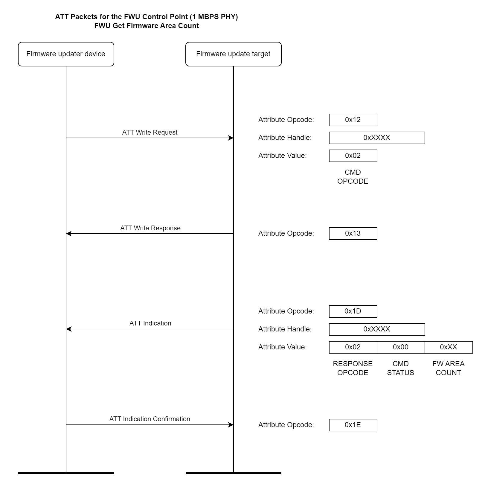

Firmware Update Service - FWUS
1 Introduction
The purpose of the EM Firmware Update Service (EMFWUS) is to provide an interface between the Firmware Updater Device (FWU Device) and the Firmware Update Target (FWU Target) via Bluetooth.
Refer to the main Firmware Update documentation page for a detailed description of the firmware update mechanism.
2 GATT Based Service Definition
2.1 Characteristic Definition
This section defines requirements related to GATT characteristics and descriptors for this service. Only one instance of each characteristic in table below is permitted within this service.
Where a characteristic can be notified or indicated, a Client Characteristic Configuration descriptor shall be included in that characteristic, as required by the Core Specification [1].
Characteristic Name |
Requirement |
Mandatory Properties |
Optional Properties |
Security Req. |
|---|---|---|---|---|
FWU Control Point |
M |
Write, Indicate |
N/A |
None |
FWU Control Point CCC Descriptor |
M |
Read, Write |
N/A |
None |
FWU Firmware Data |
O |
Write without Response |
N/A |
None |
Note
M = Mandatory, O = Optional
Security permission of “None” meanst that this version of the service does not impose any requirement. However, a profile specification may impose additional security requirements.
2.1.1 128-bit UUIDs
The Vendor specific UUID used in this service are listed in the table below.
Vendor Specific UUID |
Description |
|---|---|
81cfa888-454D-11e8-adc0-fa7ae01bd428 |
FWU Service |
81cfa9a0-454D-11e8-adc0-fa7ae01bd428 |
FWU Control Point characterisitic |
81cfaab8-454D-11e8-adc0-fa7ae01bd428 |
FWU Data characteristic |
2.2 FWU Control Point Characteristic
The behavior of the FWU Control Point is described in this section.
The Table below shows the requirements for the FWU Control Point characteristic in the context of this service:
{kind=link}
Note
M = Mandatory, O = Optional
The library delivered with this service is distributed with two variant. A light version implements only the mandatory features. It is typically used in the User Application to enable a FWU Device to get useful information on the current firmware versions programmed in the FQWU Target and to trigger a reboot of the system in Firmware Updater Mode.
The picture below shows an example usage of the FWU Control Point with the FWU Get Firmware Area Count command.
{kind=link}
2.4 FWU Data Characteristic
The FWU Data characteristic is used to transmit piece of firmware from the FWU Device to the FWU Target.